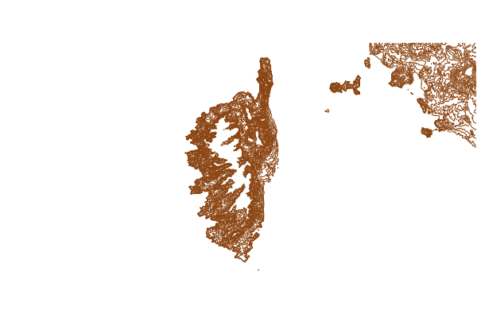
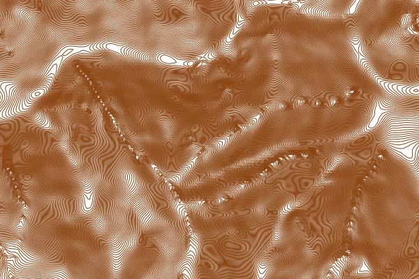

Contour¶
1. Overview¶
MapServer (since version 6.4) can compute and render a contour layer on the fly from a raster source. The raster source is one band of raster data, which represents a digital elevation model (DEM). More info about DEMs at: http://en.wikipedia.org/wiki/Digital_elevation_model
2. How it works¶
CONNECTIONTYPE CONTOUR. The new (to MapServer 6.4) type is a hybrid layer, which has a raster data source as input and vector features as output. Initially, only the line representation of those vector features will be supported. More detailed information about the original implementation can be found in RFC 85.
Since the internal layer is of type vector, queries will be supported and operate on the vectors (not on the raw raster source). In the future we might see a need to add a query mode that queries the raster source, but this is not included in this phase of work.
To render a contour layer, we need to define a layer in the mapfile with the following options:
Set the layer TYPE to LINE.
Set CONNECTIONTYPE to CONTOUR.
Set the DATA to the raster file that contains the elevation band. Starting with MapServer 7.0.1, a TILEINDEX can also be used, together with WMS Time to specify which raster of the tileindex must be used.
Specify the band to use as elevation using PROCESSING “BANDS”, same as regular raster.
Specify one or more classes and styles to render the line features.
PROCESSING settings:
These options should be specified at layer level:
CONTOUR_INTERVAL: elevation interval between contours
CONTOUR_LEVELS: comma-separated list of one or more ‘fixed levels’ to extract
CONTOUR_ITEM: provides a name for the item (attribute) in which to put the elevation. (optional)
You can also provide explicit min/max scaledenom in the CONTOUR_iNTERVAL or CONTOUR_LEVELS values if you wish to use scale-dependent contour spacing. This is done by adding an optional “miscaledenom,maxscaledenom:” prefix to the value or list of values. See the example below.
Warning
If you only set a single CONTOUR_INTERVAL for all scale ranges, MapServer will likely crash at outer scale ranges (first example below). More recent GDAL versions (such as 3.2.0) will output an error message such as: “Input values and/or interval settings would lead to too many levels”. To avoid this, set multiple CONTOUR_INTERVAL lines to handle various scale ranges (see the working Copernicus DEM example below, with output map images).
Example of a simple layer definition:
LAYER
NAME "my_contour_layer"
TYPE LINE
STATUS DEFAULT
CONNECTIONTYPE CONTOUR
DATA "/mnt/data/raster/grib/dem.grib"
PROCESSING "BANDS=1"
PROCESSING "CONTOUR_ITEM=elevation"
PROCESSING "CONTOUR_INTERVAL=10"
CLASS
STYLE
WIDTH 2
COLOR 255 0 0
END
END
END #layer
Example of a layer definition with scale-dependent contour ranges:
LAYER
NAME "my_contour_layer"
TYPE LINE
STATUS DEFAULT
CONNECTIONTYPE CONTOUR
DATA "/mnt/data/raster/grib/dem.grib"
PROCESSING "BANDS=1"
PROCESSING "CONTOUR_ITEM=elevation"
PROCESSING "CONTOUR_INTERVAL=0,25000:5" # interval of 5 for scales of 25000 or less
PROCESSING "CONTOUR_INTERVAL=25000,500000:10" # interval of 10 for scales in the 25000 to 500000 range
PROCESSING "CONTOUR_LEVELS=500000,0:10,25,50,100" # explicit list of levels for scales of 500000 and up
LABELITEM "elevation"
CLASS
STYLE
WIDTH 2
COLOR 255 0 0
END
LABEL
...
END
END
END #layer
Example of a layer definition with a tile index and WMS TIME support:
LAYER
NAME "my_contour_layer"
TYPE LINE
STATUS OFF
CONNECTIONTYPE CONTOUR
TILEINDEX "data/contour_ti.shp"
TILEITEM "location"
PROCESSING "BANDS=1"
PROCESSING "CONTOUR_ITEM=elevation"
PROCESSING "CONTOUR_INTERVAL=20"
CLASS
STYLE
WIDTH 1
COLOR 255 0 0
END # STYLE
END # CLASS
METADATA
"DESCRIPTION" "contour"
"wms_title" "contour"
"wms_timeitem" "TIME"
"wms_timeextent" "2004-01-01/2004-02-01"
END # METADATA
END # LAYER
Example of a layer definition with scale-dependent contour ranges & Copernicus EU DEM data:
LAYER
NAME "dem-contours"
TYPE LINE
STATUS ON
CONNECTIONTYPE CONTOUR
DATA "eu_dem_v11_E40N20_clip.TIF"
PROCESSING "BANDS=1"
PROCESSING "CONTOUR_ITEM=Band_1"
PROCESSING "CONTOUR_INTERVAL=0,25000:5" # interval of 5 for scales of 25000 or less
PROCESSING "CONTOUR_INTERVAL=25000,500000:10" # interval of 10 for scales in the 25000 to 500000 range
PROCESSING "CONTOUR_LEVELS=500000,0:10,25,50,100,200,300,400,500,600,700,800,900,1000" # explicit list of levels for scales of 500000 and up
CLASS
NAME "Contours"
STYLE
WIDTH 1
COLOR 139 69 19
END
END
END # layer
Figure: contours zoomed-out to coastline (Corsica island) generated from Copernicus EU DEM
Figure: contours zoomed-in (Corsica island) generated from Copernicus EU DEM
2.1 Data cellsize¶
The data produced by the gdal contour algorithm are generally in high resolution. A lot of point are used to generated contours with precision. You might want to generalize/simplify the line in some cases (ie. Shape Smoothing). The [data_cellsize] attribute binding represents the cellsize of the extend fetched from the raster file. This is different than the map cellsize.
In the following example, I generalize my shape with a tolerance of 25% of the data cellsize to produce smooth contours at all scales:
LAYER
NAME "MyContourLayer"
STATUS DEFAULT
DATA "wind.tif"
TYPE LINE
CONNECTIONTYPE CONTOUR
PROJECTION AUTO END
PROCESSING "BANDS=1"
PROCESSING "CONTOUR_ITEM=elevation"
PROCESSING "CONTOUR_INTERVAL=0,0:1"
GEOMTRANSFORM (smoothsia(generalize([shape], 0.25*[data_cellsize])))
CLASS
EXPRESSION ([elevation] >= 0)
STYLE
COLOR 0 0 255
END # STYLE
END # CLASS
END # LAYER